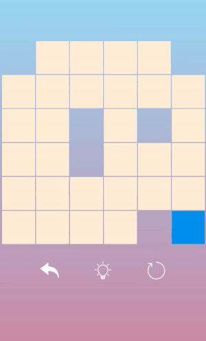

<div id="page_grid">
    <div class="pageBody">
        <div>
            <h1>One Line : Infinity Grid</h1>
        </div>
        <div>
            <h3>Game Preview</h3>
            
        </div>
        <div>
            <h3>&middot;UI Development&middot;</h3>
            <div>
                <div>
                    <h5>Layouts</h5>
                    <p>&middot; Adopted
                        <b>Linear layout</b> to align items in a row (vertical) or column (horizontally)</p>
                    <p>&middot; Designed
                        <b>Grid Layout</b> to align all grids like a chess board, of which the size is up to 12x12</p>
                    <p>&middot; Defined
                        <b>Custom Layout</b> to include the game view and a return button, a hint button, and a clear button</p>

                    <h5>Styles</h5>
                    <p>&middot;Created a <b>Gradient Color</b> of blue and violet as the background color</p>
                    <p>&middot;Defined <b>Pure Color</b> sky blue as the button color to increase contrast for better vistual effects</p>
                    <p>&middot;Imported <b>SVG Image</b> as a image button to iconically prompt its functionality</p>
                    
                    <h5>Animations</h5>
                    <p>&middot;Changed Android Animations such as <b>Translate and Alpha</b> to show and hide system dialogs</p>
                    <p>&middot;Calculated <b>Path</b> to make a demo animation for new players

                    <h5>Contorlls</h5>
                    <p>&middot;Implemented <b>onTouch Events</b> to handle contorllings. Players could swipe on screen to play rather than just click</p>
                    <p>&middot;Attached <b>onClick Listener</b> to functional buttons </p>
                </div>
            </div>
            <h3>&middot;Theoretics and Algorithms&middot;</h3>

            <div>
                <div>
                    <h5>Map Generator Algorithm</h5>
                    <p>&middot;Initiailize a <b>Random</b> point as the start point. Mark this point as visited</p>
                    <p>&middot;Use while loops, every turn generate a <b>Random</b> feasible point as the next point until there is no feasible point</p>  
                    
                    <h5>Adjacency and Border Detection</h5>
                    <p>Declare a 2D array to keep track of current grid status</p>                  
                    <p>If a point is inside the 2D array, it is feasible</p>

                    <h5>Modified Euler Path Theory</h5>
                    <p></p>
                </div>
            </div>
        </div>
        <div>
        </div>
    </div>
</div>